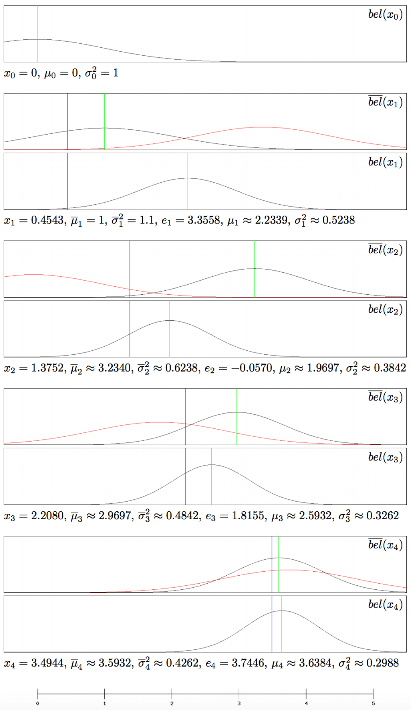

Robot Localization III: The Kalman Filter
This is part 3 in a series of articles explaining methods for robot localization, i.e. determining and tracking a robot's location via noisy sensor measurements. You should start with the first part: Robot Localization I: Recursive Bayesian Estimation
This post deals with another solution to the continuous state space problem, the Kalman Filter, invented by Thiele, Swerling and Kalman. It has successfully been used in many applications, like the mission to Mars or automatic missile guidance systems (cf. [NEGENBORN, abstract]). The classical application is radar tracking, but there is a vast amount of other applications (cf. [NORVIG, pp. 588, 589]).
In its essence, it is an implementation of the Bayes Filter in which the belief is a normal (Gaussian) distribution and can therefore be represented by its parameters: a mean vector and a covariance matrix. In this representation, the mean vector is the expected state and the covariance matrix is a measure of uncertainty.
Assumptions
In order for the Kalman filter to work, we need to make a few assumptions about the system we wish to describe (in addition to the Markov assumptions of the Bayes filter). If these assumptions hold, the belief $bel(x_t)$ will be normally distributed at each time step $t$ and can thus be represented by a mean vector $\mu_t$ and a covariance matrix $\Sigma_t$. It is also true that if either of the three assumptions is violated, then the belief will always be non-Gaussian for $t \geq 1$ (cf. [RISTIC, p. 4]). Thus, these assumptions are necessary and sufficient conditions for the Kalman Filter. In the next section, we will see how the Kalman Filter algorithm follows from these assumptions for one-dimensional state spaces. After that, we will take a look at the multi-dimensional algorithm. The assumptions are as follows:
- The transition model is a linear Gaussian, which means that $x_{t+1}$ is a function that is linear in
$x_t$ with added random Gaussian noise:
$x_{t+1} = A_{t+1} \cdot x_t + \Delta_{t+1} + \epsilon_{t+1}$
where $A$ is a matrix, $\Delta$ is a translation vector and $\epsilon$ is a vector representing unpredictable Gaussian transition noise. - The sensor model $P(e_t \vert x_t)$ is also a linear Gaussian:
$e_{t+1} = B_{t+1} \cdot x_{t+1} + \zeta_{t+1}$
where $B$ is a matrix and $\zeta$ is a vector representing unpredictable Gaussian sensor noise. - The initial belief $bel(x_0)$ is normally distributed.
The assertion that the belief is always normally distributed is very important, since it ensures the computational tractability of the belief update for deliberate time steps, because in the general case, i.e. for deliberate sensor and measurement distributions, a representation of the belief could, as we argued in chapter 2, grow unboundedly over time.
One-dimensional Kalman Filter
For simplicity, we'll first assume that we are dealing with a one-dimensional state space (i.e. $x_t$ is just a real number, e.g. a position along a line). We will take a look at the multidimensional case later. The transition phase from time $t$ to $t + 1$ just adds some number $\delta_{t+1}$ to the state, plus some unpredictable Gaussian noise $\epsilon_{t+1}$ (as before, imagine a robot moving at a desired speed of $\delta$ per time step with some unpredictable random error):
$$x_{t+1} = x_t + \delta_{t+1} + \epsilon_{t+1}$$
Then our transition model is given by
$$P(x_{t+1} \, \vert \, x_t) = \mathcal{N}(x_t + \delta_{t+1}, \phi^2)$$
The variance $\phi^2$ acts as a measure of uncertainty, reflecting the transition noise $\epsilon$. In the robot example, assuming we are at position $x_t$ at time step $t$, the position at time step $t+1$ is a Gaussian cloud around an expected position of $x_t + \delta_{t+1}$ with a variance (uncertainty) of $\phi^2$.
Our sensor model is given by
$$P(e_{t+1} \, \vert \, x_{t+1}) = \mathcal{N}(x_{t+1}, \psi^2)$$
Again, the variance $\psi^2$ acts as a measure of uncertainty, this time for the measurement noise $\zeta$. In the robot example, assuming that we are at position $x_{t+1}$, the measurement that we get can be expected to be sampled from a Gaussian cloud around $x_{t+1}$ with a variance of $\psi^2$
Assuming that the belief at some time step $t$ is a normal distribution, i.e. $bel(x_t) = \mathcal{N}(\mu_t, \sigma_t^2)$, it can be shown that the projected belief $\overline{bel}(x_{t+1})$ is also a normal distribution with mean $\overline{\mu}_{t+1} = \mu_t + \delta_{t+1}$ and variance $\overline{\sigma}_{t+1}^2 = \sigma_{t}^2 + \phi^2$.
Considering the robot example, it should not surprise us that the expected position at time step $t+1$ is just the expected position at time step $t$ plus the expected distance $\delta_{t+1}$ that we wanted to move. Moreover, it seems reasonable that our new uncertainty in the belief, $\overline{\sigma}_{t+1}^2$, is given by the old uncertainty $\sigma_{t}^2$ plus the uncertainty that we get due to the transition $\phi^2$.
Now, assuming that $\overline{bel}(x_{t+1})$ is normally distributed, it can be shown that the updated belief $bel(x_{t+1})$ after receiving a measurement $e_{t+1}$ is a normal distribution as well, this time with mean $\overline{\mu}_{t+1} + k_{t+1} \cdot (e_{t+1} - \overline{\mu}_{t+1})$ and variance $\sigma_{t+1}^2 = (1 - k_{t+1}) \overline{\sigma}_{t+1}^2$ where $k_{t+1} = \frac{\overline{\sigma}_{t+1}^2}{\overline{\sigma}_{t+1}^2 + \psi^2}$.
We can see that the new mean is a weighted average of the new measurement and the old mean, where the weights are the transition noise and the sensor noise, respectively. This makes intuitive sense: The importance of the new measurement increases with the uncertainty of the current belief, whilst the importance of the current belief increases with the uncertainty of the measurement.
A proof of these statements can be found in [NEGENBORN, pp. 34 - 37].
Now that all the preparatory work is done, we can formulate the actual Kalman Filter algorithm. It is basically a variant of the Bayes Filter with the property that the beliefs $bel(x_t)$ and $\overline{bel}(x_t)$ are now represented by their parameterizations $(\mu_t, \sigma_t^2)$ and $(\overline{\mu}_t, \overline{\sigma}_t^2)$, respectively. As with the Bayes Filter, the correctness follows by induction.
One-Dimensional Kalman Filter
- $\overline{\mu}_{t+1} = \mu_t + \delta_{t+1}$
- $\overline{\sigma}_{t+1}^2 = \sigma_{t}^2 + \phi^2$
- $k_{t+1} = \frac{\overline{\sigma}_{t+1}^2}{\overline{\sigma}_{t+1}^2 + \psi^2}$
- $\mu_{t+1} = \overline{\mu}_{t+1} + k_{t+1} \cdot (e_{t+1} - \overline{\mu}_{t+1})$
- $\sigma_{t+1}^2 = (1 - k_{t+1}) \overline{\sigma}_{t+1}^2$
- return $\mu_{t+1}, \sigma_{t+1}^2$
The variable $k$ is often called the Kalman gain (cf. [NORVIG, p. 588]) and functions as a measure of how important the new measurement is. If the uncertainty of the projected belief is low, then the Kalman gain will be low and thus the new measurement will not have a big impact on the belief. Additionally, if the uncertainty of the measurement is high, the Kalman gain will be low as well and if it is low, the Kalman gain will be high.
The Kalman gain is first incorporated in the expectation update. First, the deviation of the measurement from the expectation, $e_{t+1} - \mu_{t+1}$, is calculated, then it is weighted with the Kalman gain and finally it is added to the expectation. This has exactly the desired effect that the new measurement has an impact on the belief that is proportional to its importance. Dependent on how much new information has been incorporated, the uncertainty decreases, which is implemented in the variance update.
Example
We will now shed some light on this algorithm by applying it to a one-dimensional robot localization problem up to time step 4. The state, i.e. the robot’s location, is simply a real number. The robot believes that it starts out at $x_0 = 0$ with some uncertainty, which is reflected by a prior belief of $\mathcal{N}(\mu_0 = 0, \sigma_0^2 = 1.0)$.
We assume that the robot moves at constant average speed $d_t = 1$ with a noise of $\phi^2 = 0.1$. The positions of the robot shall be $x_0 = 0, x_1 = 0.4543, x_2 = 1.3752, x_3 = 2.2080, x_4 = 3.4944$. I sampled these positions randomly using the specified transition model. Of course, they are not known to the algorithm and they shall only be used for a later comparison with the resulting beliefs (and to create the measurements). We can see that the transition noise really had an impact here. For example, from time step 0 to 1, the robot only moved 0.4543 units when the expected distance was 1 unit.
In our example, the robot is able to sense its position with a measurement noise of $\psi^2 = 1.0$. This is very big noise if we consider that it means that, in expectation, about 68.2% of the measurements are within a distance of 1 unit to the actual position (which is already a big interval) and 31.8% of the measurements might even be outside this interval. Let’s assume that we make the following measurements (which have been sampled from the sensor model using the actual positions specified above): $e_1 = 3.3558, e_2 = −0.0570, e_3 = 1.8155, e_4 = 3.7446$. We can see the obvious impact of the measurement noise: Although we were at position 0.4543 at time step 1, we measured the position 3.3558.
The following figure shows the development of the belief for the first four time steps, both numerically and graphically. At each time step, the black graphs show the belief specified in the upper right-hand corner, whereas the red graphs show the measurement probabilities $P(e_t \, \vert \, x_t)$. The blue line shows the position $x_t$ and the green line the expected position, i.e. the mean of the belief distribution. Take some time to go over the graphs and do not let the mass of information confuse you. After having understood this example, you are able to visualize the Kalman Filter, which helps a lot when using it.

We can see that even though the measurements have been very bad, we still arrive at a belief that is quite reasonable, with an error of only 0.144.
Multi-Dimensional Kalman Filter
Let's now take a glimpse at the multi-dimensional situation, which looks a little scary but really is completely analogous to the one-dimensional case.
As before, the transition model has to be a linear Gaussian ($x_{t+1} = A_{t+1} x_t + \Delta_{t+1} + \epsilon_{t+1}$), so our transition probability are given by $P(x_{t+1} \, \vert \, x_t) = \mathcal{N}(A_{t+1} x_t + \Delta_{t+1}, \Phi_{t+1})$. Our uncertainty is now reflected by a covariance matrix $\Phi_{t+1}$ instead of a variance along a single dimension.
The sensor model has to be a linear Gaussian as well ($e_{t+1} = B_{t+1} \cdot x_{t+1} + \zeta_{t+1}$), so our measurement probabilities are given analogously by $P(e_{t+1} \, \vert x_{t+1}) = \mathcal{N}(C_{t+1} x_{t+1}, \Psi_{t+1})$.
With these models defined, we can now state the multi-dimensional Kalman Filter algorithm (cf. [THRUN, p. 42]).
Multi-Dimensional Kalman Filter
- $\overline{\mu}_{t+1} = A_{t+1} \mu_t + \Delta_{t+1}$
- $\overline{\Sigma}_{t+1} = A_{t+1} \Sigma_{t} A_{t+1}^T + \Phi_{t+1}^2$
- $K_{t+1} = \overline{\Sigma}_{t+1} C_{t+1}^T (C_{t+1} \overline{\Sigma}_{t+1} C_{t+1}^T + \Psi_{t+1})^{-1}$
- $\mu_{t+1} = \overline{\mu}_{t+1} + K_{t+1} \cdot (e_{t+1} - C_{t+1} \overline{\mu})$
- $\Sigma_{t+1} = (I - K_{t+1} C_{t+1}) \overline{\Sigma}_{t+1}$
- return $\mu_{t+1}, \Sigma_{t+1}^2$
It is worth noting that $\overline{\Sigma}_t$, $\Sigma_t$ and $K_t$ are independent of the measurements and can therefore be calculated in advance, which reduces the amount of computation that has to be done "live".
Applicability
When we are dealing with linear Gaussian systems, the Kalman Filter is the way to go, since it is very efficient, easy to implement and completely exact if the three assumptions really hold. There are, however, only very few systems that really behave like this. Normally, the state transition process is nonlinear, which means it can not be described with a simple matrix multiplication.
The so-called extended Kalman Filter attempts to overcome this issue. The idea here is that if the state transition process is approximately linear in regions that are close to $\mu_t$, then a Gaussian belief is a reasonable approximation. If the system behaves nonlinear in regions close to the mean, the extended Kalman Filter yields bad results.
A different solution is the so-called switching Kalman Filter, which works by running multiple instances of the Kalman Filter in parallel, where each of them uses a different transition model. The overall belief is then calculated as a weighted sum of the belief distributions of the different instances, where the weight is a measure of how compatible this particular instance is with the measurements.
Continue with IV: The Particle Filter.